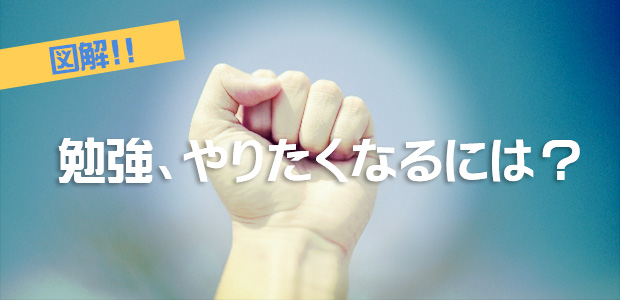
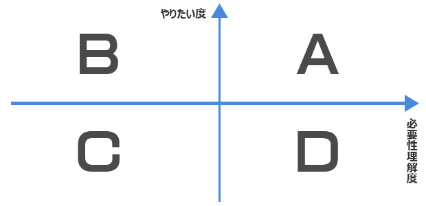

「やる気」大抵の場合は無い
よく５月病なんて言いまして、私なんかも最近はダラ～っとしたくなることが多いです。
まあ一般的に言われているのは、連休をはさんでしまったために、それまで継続していたこと（仕事や勉強など）の緊張の糸が切れてやる気を失ってしまうという。
ところで、その「やる気」という言葉、最近はモチベーションなんていう言い方もしますが、本当にやる気がある場合って結構マレじゃないかなぁと思うのです。
例えば、仕事場において次のような光景はよく見るのでないでしょうか。
上司「あ、この前君がやりますと言っていたあの企画、資料できた？」
部下「あ…すみません、これからです」
上司「早く見せてくれよな」
部下「はい、今週中にやります」
数日後…
上司「例の企画資料」
部下「あ…実はまだ途中でして…」
上司「今週中って約束したじゃないか！やる気ないだろ？」
部下「いえ、そういうワケじゃないです。やる気あります！やります」
これ、‘あるある’な光景ですよね～。
さて部下の人は、この企画に対するやる気、あると思いますか？
無いですよね～！
私が考えるに、‘やる気’という言葉はとても曖昧なものです。
このケースでは、おそらく部下の人は「その企画がやるべきもので、資料の作成も必要な事」とは思っている可能性が高い。
それなのに、なぜ彼は資料の作成に着手せず、先送りしていたのでしょうか。
こういう場合、「やる気」という言葉を「やりたい」という願望に言い換えると分かりやすいと思います。
だって、本当に心からやりたいという気持ちがあったら、何を差し置いてでも最優先でやりませんか？
ものすごく楽しみにしてたイベント（例えばコンサートだの焼肉パーティだの何でもよいです）の前日に、たまたま２時間ぐらいしか眠れず睡眠不足だったとしましょう。
でもそんなのカンケーね～（古っ…）という感じで予定通りにノリノリでそのイベントを遂行する人がほとんどです。
理由は簡単。「やりたくて仕方がないから」に尽きます。
つまり、「やる気がある＝やりたい」という単純図式が成り立つと考えてよいのです。
裏を返せば、特殊な事情が無い限り、「やっていない＝やりたくない」ということなのです。
これはどう考えても真実なのですが、実はそういう風に認識している人がとても少ない。
そして逆に多くの人が間違えているのは、「必要性を理解はしている」ということを「やる気がある」という言葉に変換してしまっていることです。
まぁいわゆる、‘分かっちゃいるけど体が動かない’という状態です。で、結論としては「分かっちゃいるけど、やりたくない！」が本音です。
そう、大抵はやる気なんて無いのがよくあるパターンなんです。
勉強、やりたくなるには？
ここで、「やりたいかどうか」「必要だと思うかどうか」という２つの要素を軸として、子どもが勉強をしない根底にあるものを考えてみました。

ＡとＢは‘やりたい’のですから、何の問題もないです。自然とやるでしょう。
その動機はいったん置いておいて構いません。
Ｃのタイプは一見するとどうしようも無いように感じるかもしれませんが、私個人としては悪くないと思います。
なぜなら、必要性を感じていないということは、勉強以外の道で人生を切り開こうという明確な方向性が生まれる可能性があるからです。
音楽でもスポーツでも料理でもイイわけですが、その中で「どんな道に行こうと、教養は必要となる」ということに気づいたら勉強すればよいでしょう。
やっかいなのはＤですね。
前述した「わかっちゃいるけど…」のタイプ。単に面倒くさがり屋というだけならまだマシかもしれません。そういう人は一度エンジンがかかると一気に集中するタイプですからね。
厳しいのは、真面目タイプに見える人。この場合は、勉強したとしてもどこまでも義務感のみで取り組む（つまり内心は嫌々やっている）ため、やった効果も薄いという。
ということで、やる気のある＝やりたい状態にしない限り、好サイクルは生まれないというのが私の意見です。
で、どうすればやる気が出るの？という話。
ぶっちゃけて言えば、やる気もないのにやる気なんか出せるか！ って思います（汗）。
身もフタもない言い方ですが、まずこれを認めないと始まらないのです。
どこかにやる気の出る方法があって、それを教えてほしいなんて思っているうちは絶対にやる気なんか出ない。
ただし、勉強を「やりたい」と思っている人がどうしてやりたいのか、ということに関してはいくつか事例があるので紹介します。
- ①勉強そのもの自体に面白さを感じている
- ②成績を上げることを、一種のゲームとして楽しんでいる
- ③勉強することで、何かしらの利益があるからやっている
基本的には①が最も次元の高い状態ではあると思います。
興味・関心に勝るものはないですからね。
②も自分を主人公とした成長ゲームを攻略するような感じで、それも必要なことかもしれません。
③は、長期的な将来像からの逆算であれば、非常に立派です。ただし、目先の利益（例えば、成績があがったら○○を買ってあげるわよ、みたいな約束をする）をエサにするのはオススメしません。それは長続きしませんし、長期的に見て結局は学力向上の妨げになると思います。
もし親がなにか協力できるとしたら、「利害関係から解放してあげるような一言」をかけるしかないでしょう。
中学生以上になると、どうしても‘成績による内申’という利害関係が生じるため、純粋な勉強の魅力を曇らせてしまうのです。
そこで、本来の勉強の魅力や意義を、お説教でなくストレートに語ったりすることは、意外に有効です。
シブシブ定期テストの勉強をしている子どもに、「あ、いま幕末を勉強してるの？竜馬ってアツいわよね～」とか、そんなぐらいなものでも、「勉強してるの？」「先に宿題やりなさい」という言葉より数百倍マシです（笑）。
受験という利害関係がなくなった今だからこそ、歴史や数学に純粋に興味が出たという経験は大人になると多かれ少なかれあると思います。子どもこそ本来は知的好奇心が旺盛なのですから、そこを刺激するのが一番です。
また、利害関係を正面から受け止める姿を親が率先して見せるということも有効です。
何かの資格試験に向けて猛勉強しているとか、そういうことです。
子ども自身が尻を叩かれるより、こういう背中を見せるということの方が強く子どもに響くということは間違いないでしょう。
私も偉そうに言っていますが、仕事内容によってはＤの状態になることもあります。
ただし、社会人になったらチームプレイが使えるんです。
必要だけれど自分では苦手でやりたくない場合は、得意な人に依頼する。その代り自分にしか出来ない分野で最高のパフォーマンスを発揮する。
ということで、ちょっと今回はマジメに語りました。